2025 Advanced Higher Biology - Paper 1 questions
Source: Scottish Qualifications Authority (SQA) / Qualifications Scotland. This is a StemInteract HTML companion, not an official HTML edition. Selectable text is supplied alongside original page images. Use the images or original PDF for equations, powers, fractions, vector notation, tables and diagrams; text extraction cannot fully preserve mathematical layout.
Jump to a question
PDF page 1
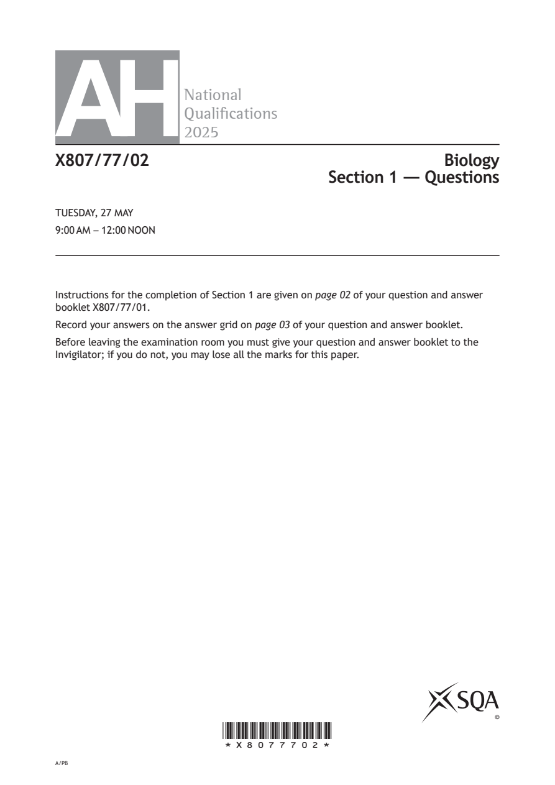
Selectable page text
AH
National
Qualications
2025
X807/77/02 Biology
Section 1 — Questions
TUESDAY, 27 MAY
9:00 AM – 12:00 NOON
Instructions for the completion of Section 1 are given on page 02 of your question and answer
booklet X807/77/01.
Record your answers on the answer grid on page 03 of your question and answer booklet.
Before leaving the examination room you must give your question and answer booklet to the
Invigilator; if you do not, you may lose all the marks for this paper.
©
*X8077702*
A/PBPDF page 2
Paper 1, Question 1Paper 1, Question 2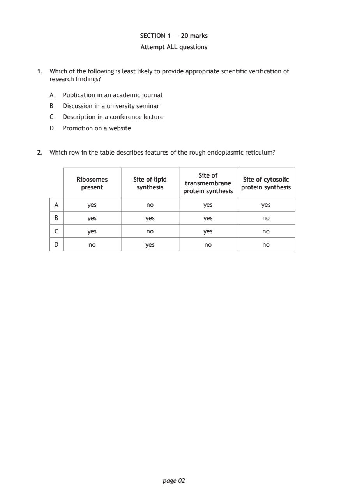
Selectable page text
SECTION 1 — 20 marks
Attempt ALL questions
1. Which of the following is least likely to provide appropriate scientific verification of
research findings?
A Publication in an academic journal
B Discussion in a university seminar
C Description in a conference lecture
D Promotion on a website
2. Which row in the table describes features of the rough endoplasmic reticulum?
Site of
Ribosomes Site of lipid Site of cytosolic
transmembrane
present synthesis protein synthesis
protein synthesis
A yes no yes yes
B yes yes yes no
C yes no yes no
D no yes no no
page 02PDF page 3
Paper 1, Question 3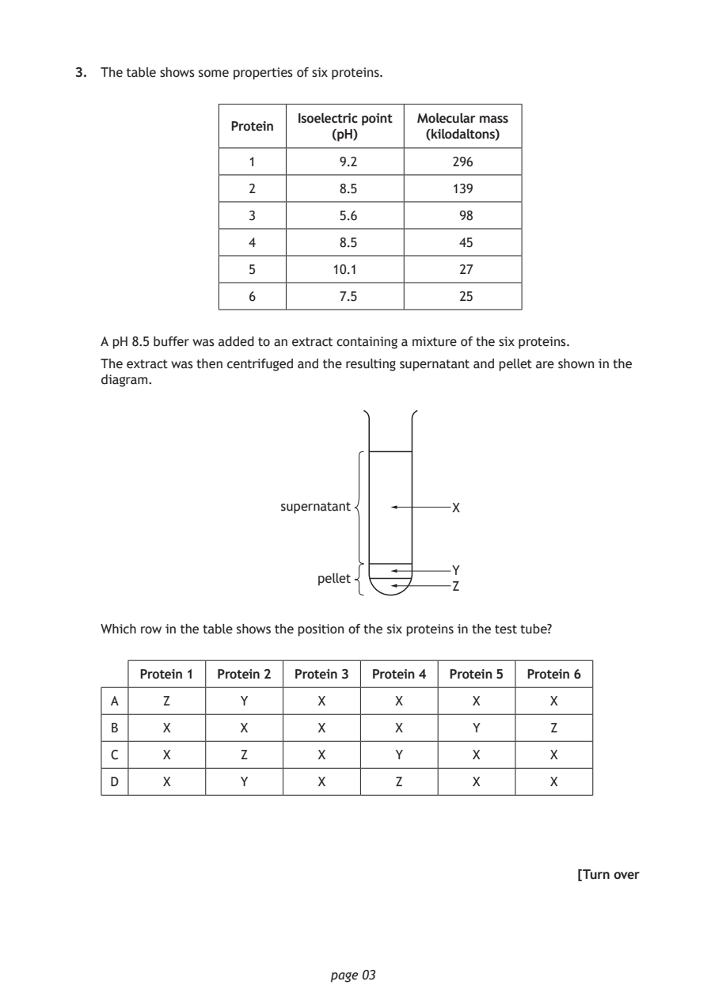
Selectable page text
3. The table shows some properties of six proteins.
Isoelectric point Molecular mass
Protein
(pH) (kilodaltons)
1 9.2 296
2 8.5 139
3 5.6 98
4 8.5 45
5 10.1 27
6 7.5 25
A pH 8.5 buffer was added to an extract containing a mixture of the six proteins.
The extract was then centrifuged and the resulting supernatant and pellet are shown in the
diagram.
supernatant X
Y
pellet
Z
Which row in the table shows the position of the six proteins in the test tube?
Protein 1 Protein 2 Protein 3 Protein 4 Protein 5 Protein 6
A Z Y X X X X
B X X X X Y Z
C X Z X Y X X
D X Y X Z X X
[Turn over
page 03PDF page 4
Paper 1, Question 4Paper 1, Question 5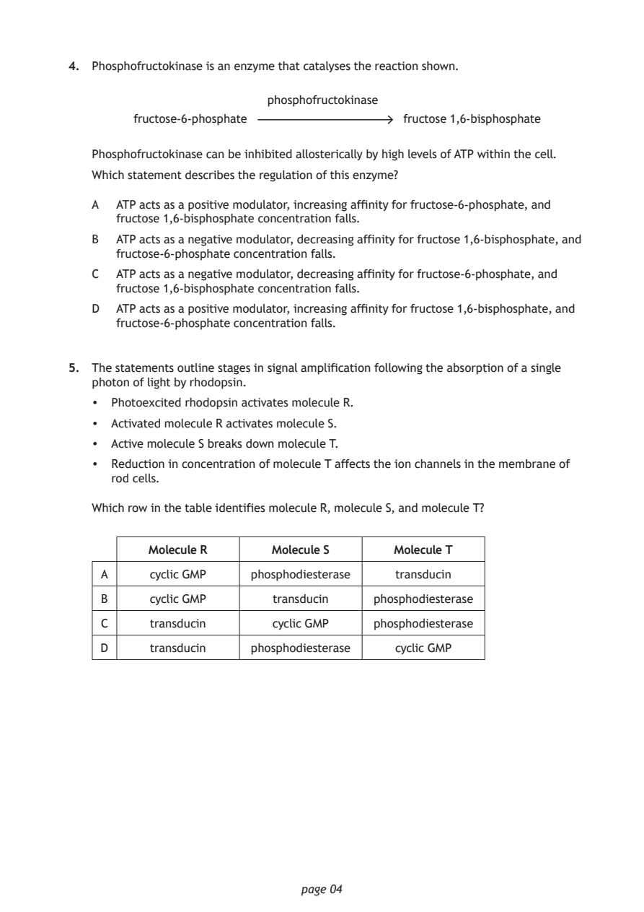
Selectable page text
4. Phosphofructokinase is an enzyme that catalyses the reaction shown.
phosphofructokinase
fructose-6-phosphate fructose 1,6-bisphosphate
Phosphofructokinase can be inhibited allosterically by high levels of ATP within the cell.
Which statement describes the regulation of this enzyme?
A ATP acts as a positive modulator, increasing affinity for fructose‑6‑phosphate, and
fructose 1,6‑bisphosphate concentration falls.
B ATP acts as a negative modulator, decreasing affinity for fructose 1,6‑bisphosphate, and
fructose‑6‑phosphate concentration falls.
C ATP acts as a negative modulator, decreasing affinity for fructose‑6‑phosphate, and
fructose 1,6‑bisphosphate concentration falls.
D ATP acts as a positive modulator, increasing affinity for fructose 1,6‑bisphosphate, and
fructose‑6‑phosphate concentration falls.
5. The statements outline stages in signal amplification following the absorption of a single
photon of light by rhodopsin.
• Photoexcited rhodopsin activates molecule R.
• Activated molecule R activates molecule S.
• Active molecule S breaks down molecule T.
• Reduction in concentration of molecule T affects the ion channels in the membrane of
rod cells.
Which row in the table identifies molecule R, molecule S, and molecule T?
Molecule R Molecule S Molecule T
A cyclic GMP phosphodiesterase transducin
B cyclic GMP transducin phosphodiesterase
C transducin cyclic GMP phosphodiesterase
D transducin phosphodiesterase cyclic GMP
page 04PDF page 5
Paper 1, Question 6Paper 1, Question 7Paper 1, Question 8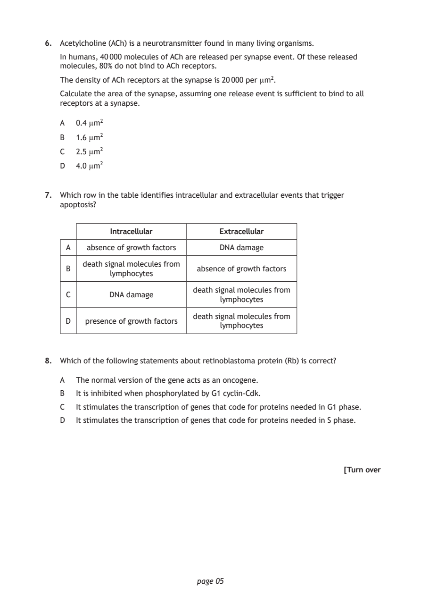
Selectable page text
6. Acetylcholine (ACh) is a neurotransmitter found in many living organisms.
In humans, 40 000 molecules of ACh are released per synapse event. Of these released
molecules, 80% do not bind to ACh receptors.
The density of ACh receptors at the synapse is 20 000 per µm².
Calculate the area of the synapse, assuming one release event is sufficient to bind to all
receptors at a synapse.
A 0.4 µm²
B 1.6 µm²
C 2.5 µm²
D 4.0 µm²
7. Which row in the table identifies intracellular and extracellular events that trigger
apoptosis?
Intracellular Extracellular
A absence of growth factors DNA damage
death signal molecules from
B absence of growth factors
lymphocytes
death signal molecules from
C DNA damage
lymphocytes
death signal molecules from
D presence of growth factors
lymphocytes
8. Which of the following statements about retinoblastoma protein (Rb) is correct?
A The normal version of the gene acts as an oncogene.
B It is inhibited when phosphorylated by G1 cyclin‑Cdk.
C It stimulates the transcription of genes that code for proteins needed in G1 phase.
D It stimulates the transcription of genes that code for proteins needed in S phase.
[Turn over
page 05PDF page 6
Paper 1, Question 9Paper 1, Question 10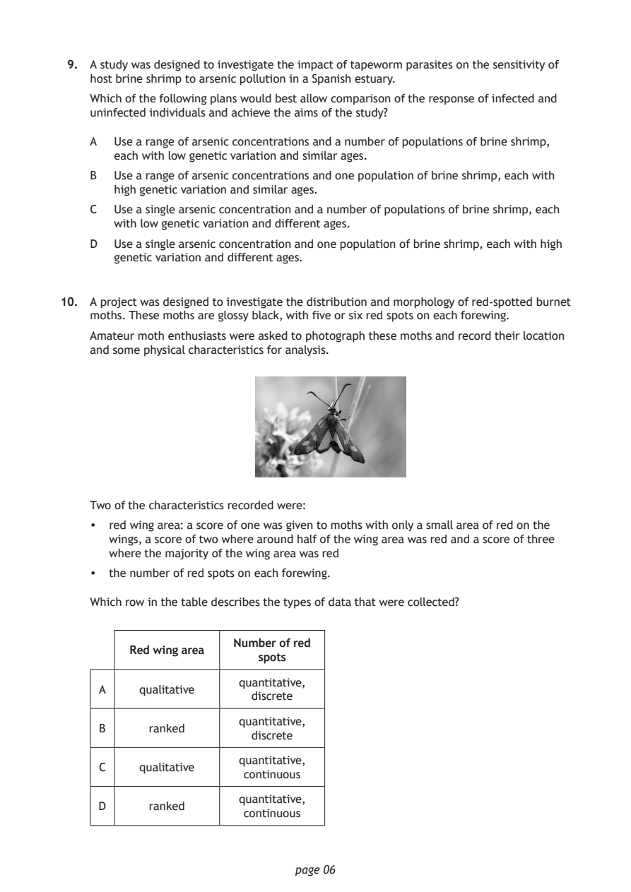
Selectable page text
9. A study was designed to investigate the impact of tapeworm parasites on the sensitivity of
host brine shrimp to arsenic pollution in a Spanish estuary.
Which of the following plans would best allow comparison of the response of infected and
uninfected individuals and achieve the aims of the study?
A Use a range of arsenic concentrations and a number of populations of brine shrimp,
each with low genetic variation and similar ages.
B Use a range of arsenic concentrations and one population of brine shrimp, each with
high genetic variation and similar ages.
C Use a single arsenic concentration and a number of populations of brine shrimp, each
with low genetic variation and different ages.
D Use a single arsenic concentration and one population of brine shrimp, each with high
genetic variation and different ages.
10. A project was designed to investigate the distribution and morphology of red‑spotted burnet
moths. These moths are glossy black, with five or six red spots on each forewing.
Amateur moth enthusiasts were asked to photograph these moths and record their location
and some physical characteristics for analysis.
Two of the characteristics recorded were:
• red wing area: a score of one was given to moths with only a small area of red on the
wings, a score of two where around half of the wing area was red and a score of three
where the majority of the wing area was red
• the number of red spots on each forewing.
Which row in the table describes the types of data that were collected?
Number of red
Red wing area
spots
quantitative,
A qualitative
discrete
quantitative,
B ranked
discrete
quantitative,
C qualitative
continuous
quantitative,
D ranked
continuous
page 06PDF page 7
Paper 1, Question 11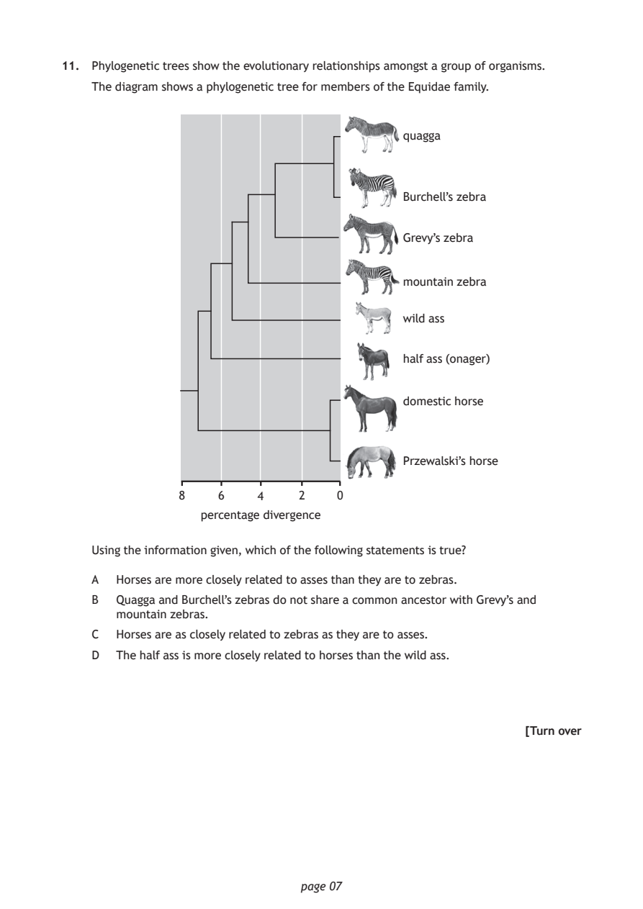
Selectable page text
11. Phylogenetic trees show the evolutionary relationships amongst a group of organisms.
The diagram shows a phylogenetic tree for members of the Equidae family.
quagga
Burchell’s zebra
Grevy’s zebra
mountain zebra
wild ass
half ass (onager)
domestic horse
Przewalski’s horse
8 6 4 2 0
percentage divergence
Using the information given, which of the following statements is true?
A Horses are more closely related to asses than they are to zebras.
B Quagga and Burchell’s zebras do not share a common ancestor with Grevy’s and
mountain zebras.
C Horses are as closely related to zebras as they are to asses.
D The half ass is more closely related to horses than the wild ass.
[Turn over
page 07PDF page 8
Paper 1, Question 12Paper 1, Question 13Paper 1, Question 14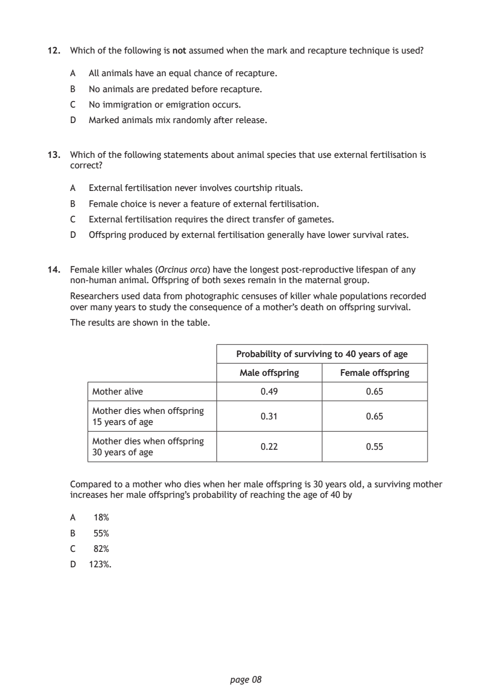
Selectable page text
12. Which of the following is not assumed when the mark and recapture technique is used?
A All animals have an equal chance of recapture.
B No animals are predated before recapture.
C No immigration or emigration occurs.
D Marked animals mix randomly after release.
13. Which of the following statements about animal species that use external fertilisation is
correct?
A External fertilisation never involves courtship rituals.
B Female choice is never a feature of external fertilisation.
C External fertilisation requires the direct transfer of gametes.
D Offspring produced by external fertilisation generally have lower survival rates.
14. Female killer whales (Orcinus orca) have the longest post‑reproductive lifespan of any
non‑human animal. Offspring of both sexes remain in the maternal group.
Researchers used data from photographic censuses of killer whale populations recorded
over many years to study the consequence of a mother’s death on offspring survival.
The results are shown in the table.
Probability of surviving to 40 years of age
Male offspring Female offspring
Mother alive 0.49 0.65
Mother dies when offspring
0.31 0.65
15 years of age
Mother dies when offspring
0.22 0.55
30 years of age
Compared to a mother who dies when her male offspring is 30 years old, a surviving mother
increases her male offspring’s probability of reaching the age of 40 by
A 18%
B 55%
C 82%
D 123%.
page 08PDF page 9
Paper 1, Question 15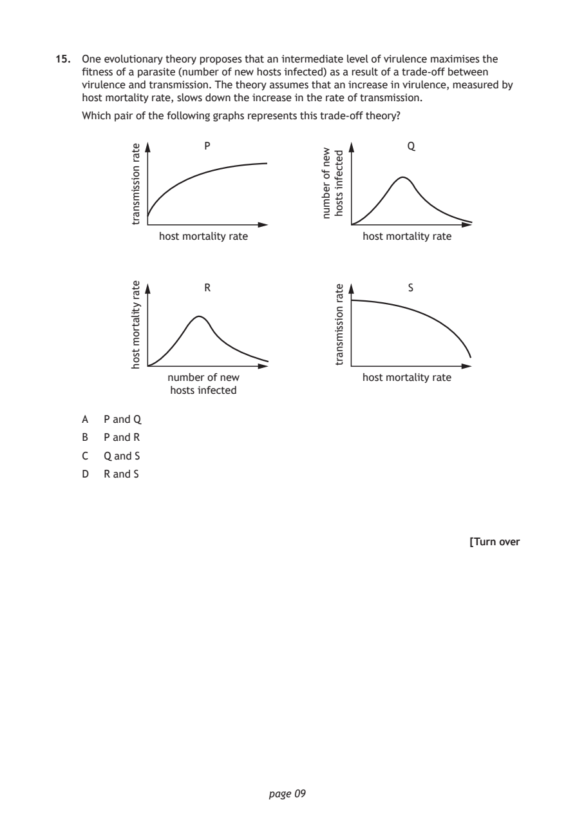
Selectable page text
15. One evolutionary theory proposes that an intermediate level of virulence maximises the
fitness of a parasite (number of new hosts infected) as a result of a trade‑off between
virulence and transmission. The theory assumes that an increase in virulence, measured by
host mortality rate, slows down the increase in the rate of transmission.
Which pair of the following graphs represents this trade‑off theory?
P
page 09
etar
noissimsnart
host mortality rate
S etar
noissimsnart
R
host mortality rate
etar
ytilatrom
tsoh
Q
number of new
hosts infected
wen
fo
rebmun
detcefni
stsoh
host mortality rate
A P and Q
B P and R
C Q and S
D R and S
[Turn overPDF page 10
Paper 1, Question 16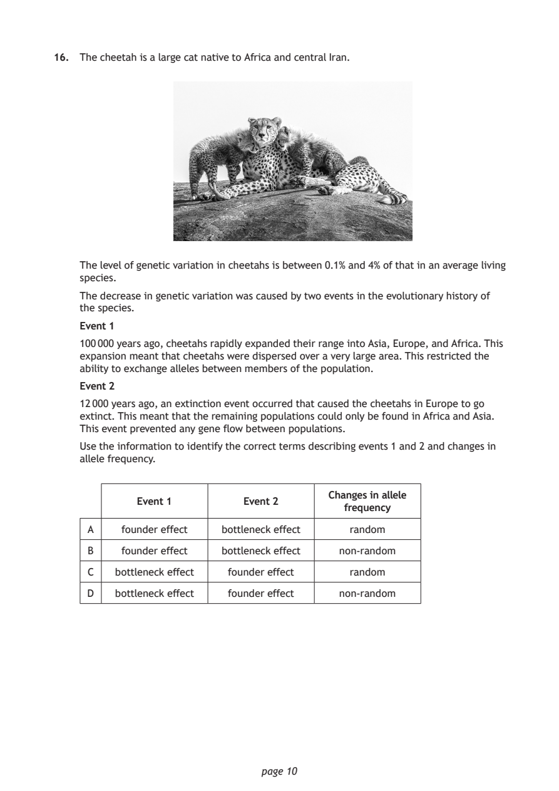
Selectable page text
16. The cheetah is a large cat native to Africa and central Iran.
The level of genetic variation in cheetahs is between 0.1% and 4% of that in an average living
species.
The decrease in genetic variation was caused by two events in the evolutionary history of
the species.
Event 1
100 000 years ago, cheetahs rapidly expanded their range into Asia, Europe, and Africa. This
expansion meant that cheetahs were dispersed over a very large area. This restricted the
ability to exchange alleles between members of the population.
Event 2
12 000 years ago, an extinction event occurred that caused the cheetahs in Europe to go
extinct. This meant that the remaining populations could only be found in Africa and Asia.
This event prevented any gene flow between populations.
Use the information to identify the correct terms describing events 1 and 2 and changes in
allele frequency.
Changes in allele
Event 1 Event 2
frequency
A founder effect bottleneck effect random
B founder effect bottleneck effect non‑random
C bottleneck effect founder effect random
D bottleneck effect founder effect non‑random
page 10PDF page 11
Paper 1, Question 17Paper 1, Question 18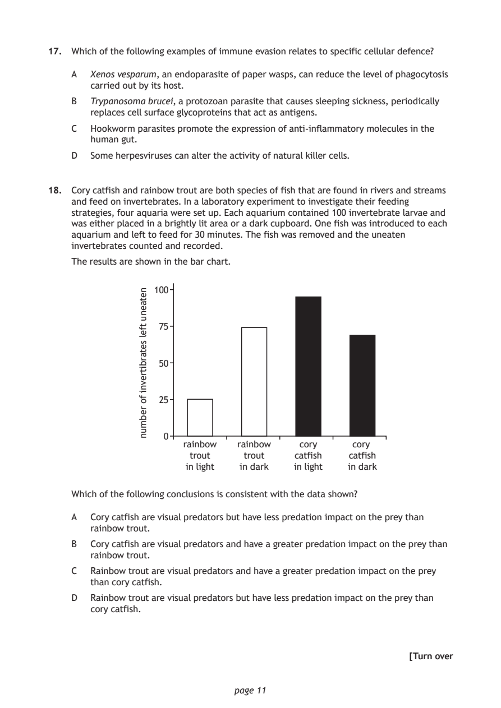
Selectable page text
17. Which of the following examples of immune evasion relates to specific cellular defence?
A Xenos vesparum, an endoparasite of paper wasps, can reduce the level of phagocytosis
carried out by its host.
B Trypanosoma brucei, a protozoan parasite that causes sleeping sickness, periodically
replaces cell surface glycoproteins that act as antigens.
C Hookworm parasites promote the expression of anti‑inflammatory molecules in the
human gut.
D Some herpesviruses can alter the activity of natural killer cells.
18. Cory catfish and rainbow trout are both species of fish that are found in rivers and streams
and feed on invertebrates. In a laboratory experiment to investigate their feeding
strategies, four aquaria were set up. Each aquarium contained 100 invertebrate larvae and
was either placed in a brightly lit area or a dark cupboard. One fish was introduced to each
aquarium and left to feed for 30 minutes. The fish was removed and the uneaten
invertebrates counted and recorded.
The results are shown in the bar chart.
rainbow
trout
in light
page 11
netaenu
tfel
setarbitrevni
fo
rebmun
100
75
50
25
0
rainbow cory cory
trout catfish catfish
in dark in light in dark
Which of the following conclusions is consistent with the data shown?
A Cory catfish are visual predators but have less predation impact on the prey than
rainbow trout.
B Cory catfish are visual predators and have a greater predation impact on the prey than
rainbow trout.
C Rainbow trout are visual predators and have a greater predation impact on the prey
than cory catfish.
D Rainbow trout are visual predators but have less predation impact on the prey than
cory catfish.
[Turn overPDF page 12
Paper 1, Question 19Paper 1, Question 20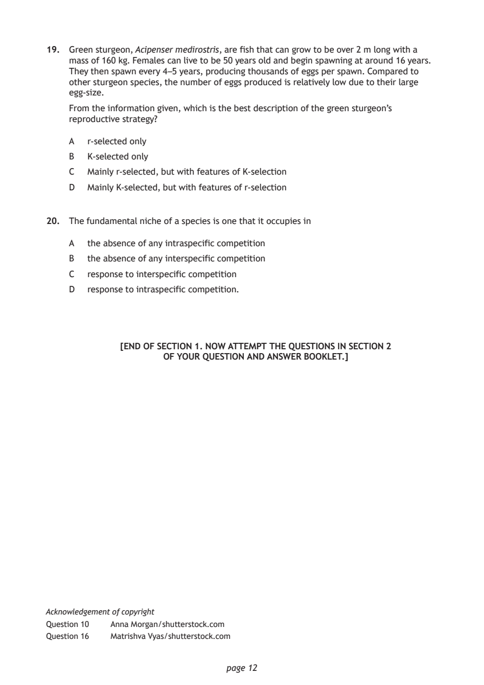
Selectable page text
19. Green sturgeon, Acipenser medirostris, are fish that can grow to be over 2 m long with a
mass of 160 kg. Females can live to be 50 years old and begin spawning at around 16 years.
They then spawn every 4 –5 years, producing thousands of eggs per spawn. Compared to
other sturgeon species, the number of eggs produced is relatively low due to their large
egg‑size.
From the information given, which is the best description of the green sturgeon’s
reproductive strategy?
A r‑selected only
B K‑selected only
C Mainly r‑selected, but with features of K‑selection
D Mainly K‑selected, but with features of r‑selection
20. The fundamental niche of a species is one that it occupies in
A the absence of any intraspecific competition
B the absence of any interspecific competition
C response to interspecific competition
D response to intraspecific competition.
[END OF SECTION 1. NOW ATTEMPT THE QUESTIONS IN SECTION 2
OF YOUR QUESTION AND ANSWER BOOKLET.]
Acknowledgement of copyright
Question 10 Anna Morgan/shutterstock.com
Question 16 Matrishva Vyas/shutterstock.com
page 12